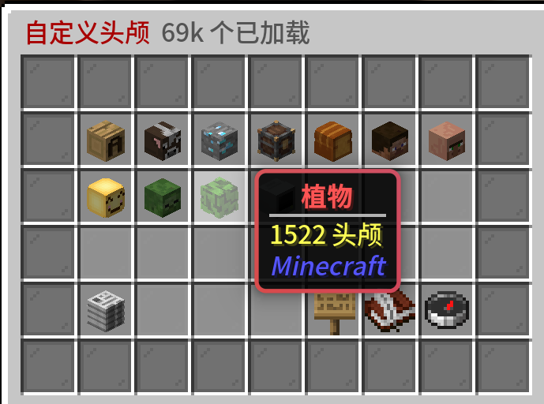
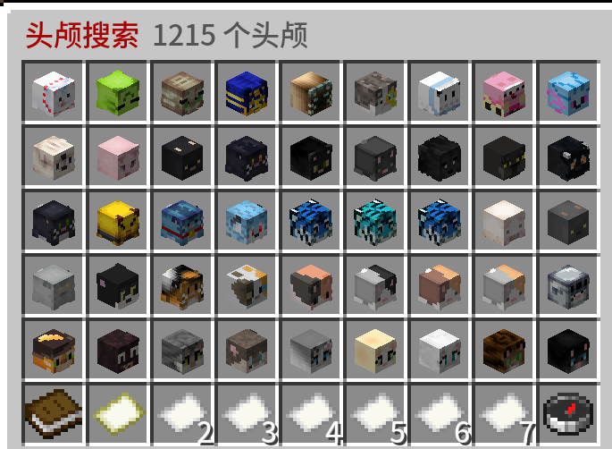

Loading header...
HeadDatabase插件
HeadDatabase插件，也被叫做头颅商店，拥有一个庞大的头颅数据库。
 图片的说明文字
图片的说明文字
指令一览
- /hdb 打开头颅商店
- /hdb search <string> 搜索指定字符串并在头颅商店显示 /hdb info 显示版本、库存、作者信息和数据库地址
功能介绍
你可以在透露商店中浏览已分类的头颅并购买，它们通过不同的贴图形成了不同的外观，可以在建筑中用作装饰品。你也可以获取自身的头颅，购买每个头颅需要消耗100银币。

头颅商店目录

头颅商店的搜索结果
目录